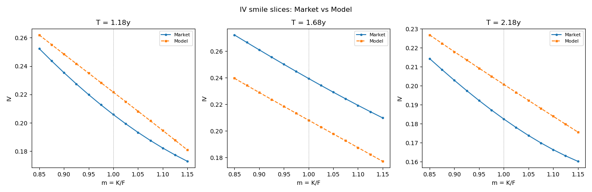

Fitting a stochastic-volatility model to a live implied-volatility surface, checking that the fitter works, and showing where the model stops being able to fit.
github.com/hajar6883/equity-options-pricing-vol-calibration
Black–Scholes prices every option with one volatility. The market doesn't: implied volatility slopes across strikes and changes with maturity. Heston lets the variance itself move, with five parameters (current variance, long-run variance, reversion speed, vol-of-vol, spot–vol correlation), and calibrating means choosing those five to match the whole surface at once.
Two things make that harder than it sounds. The objective is non-convex, so a local optimiser started in the wrong place converges to the wrong answer with confidence. And the textbook form of the Heston characteristic function crosses a branch cut of the complex logarithm at long maturities, which corrupts prices without any error being raised.
yfinance option chain OTM puts + OTM calls, on a moneyness grid
|
v
price Heston characteristic function, "little trap" form
|
v
invert model prices -> implied vols
|
v
objective weighted IV MSE: Gaussian weight around ATM, √T across maturities
|
v
optimise differential evolution (global) -> L-BFGS-B (local)
|
v
diagnostics · RMSE by maturity · error by moneyness · smile plots
The “little trap” formulation (Albrecher et al.) rewrites the characteristic function so it stays on the right branch. The global search finds the basin; the local search refines inside it.
Around the calibrator sits the rest of the toolkit it relies on: a Monte Carlo engine with antithetic and control variates, Greeks by finite difference, pathwise and likelihood-ratio estimators, SABR through Hagan's approximation, and a Dupire local-vol surface built from market implied vols.
The fitter works. On a noiseless surface generated from known parameters (v0 = 0.04, κ = 2, θ = 0.04, σ = 0.3, ρ = −0.7), calibration recovers all five to within 0.001, with IV RMSE under 0.01 vol points.
The model is the limit. SPY, April 2026, spot 686.10, three maturities from 1.2 to 2.2 years, full smile:
| Maturity | IV RMSE |
|---|---|
| 1.18y | 1.33 vol pts |
| 1.68y | 3.19 vol pts |
| 2.18y | 1.66 vol pts |
| Overall | 2.21 vol pts |

Market (solid) against calibrated Heston (dashed). The slopes match; the levels do not. The model sits above the market at the first and last maturity and below it at the middle one, which is the term structure it cannot bend into shape.
github.com/hajar6883/equity-options-pricing-vol-calibration · Back to index